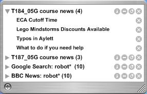
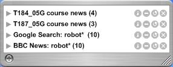
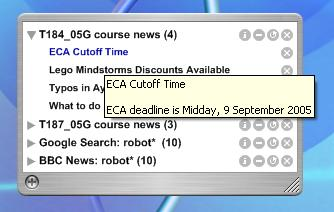
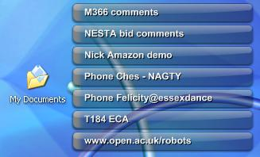
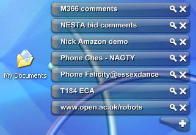
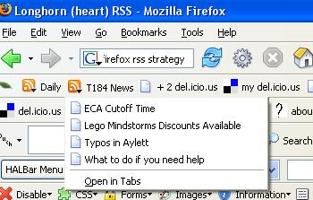

August 11, 2005
Course News Widget Wants List
A couple more thoughts on the T184 News Konfabulator Widget posted earlier, specifically, how to meake it useable...
As you may remember, the widget looks like this:
 
The only problem is - how do I know when there is there a new news story, particularly for the Course News feeds?
The use of a hot colour, or unread flag, are two possible options. This would highlight the name of the feed containing the unread item when the feed list is collapsed, and the unread items when it is open.
So - how does the widget know when an item has been acknowledged? For the Course News items, clicking on a link takes you to the Course Website, which requires a login. Which is why - if the news item is pithy enough, it usually just suffices to hover over the link to see if it is worth the effort logging in to read the whole story...

This means, of course, that you can't guarantee that the user will acknoldge a link by clicking it (though they might by hovering over it).
At first I imagined that what would probably be more useful would be to have an Acknowledge button that would mark as seen all open, highlighted news items. However, it may be better if each item was flagged witha flag, that could be clicked on to acknowldge the message.
Another alternative, perhaps, would be to link some news feeds into a widget such as the What to Do widget that ships with Konfabulator (or perhaps the tidier Mini-What To Do widget).
This widget could pop up each new Course News item on your To Do list. Where the frequency of nes postings is low, this wouldn't be too much intrusion on day to day behaviour (assuming you use the To Do widget, of course!) whilst ensuring a reasonably high impact on attention when a new item is posted.
 
As the title of this post suggests, I haven;t implemented any of these alerting systems yet... But I shall pop them on to my To Do list ;-)
August 10, 2005
T184 News Konfabulator Widget
Picking up on an earlier post about making RSS feeds easy to consume, here is a Konfabulator MultiNewsReader Widget (with a default T184 News feed).
The widget is 99.9% the MultiNewsReader widget by Gair Heaton, with the smallest of mods to replace the default news feed.
To try it out, you'll need to install Konfabulator, followed by the widget. Once installed, it should look something like this...

How easy is that? No need to set up a news reader, or login to Bloglines (or whatever your preferred online RSS aggregator happens to be). Just a net connection and a bit of space on your desktop for the widget.
It's easy enough to add other relevant (or even Relevant Knowledge...) feeds to the reader, such as a search of news stories on robot* from the new Google news RSS feeds...
If you prefer, you can limit the search options to just retrieve news stories from your preferrred news agency, such as the BBC. Just make use of the source: switch, as in this search for BBC news stories (source:bbc_news) about computer-virus OR firewall OR spam OR phishing, which may be of interest to T187 students (course taster here), for example...
August 09, 2005
RSS2PDF - Yet Another Publication Route
I've not really given much though to how RSS may be used to deliver course materials, but any delivery mechanism should provide students with a printable version if the material isn't too online interactive for print.
So when I stumbled across rss2pdf.org, another piece of the jigsaw appeared...
Specifically, here's a service that does exactly what is says on the box. And what this means is the ability to effortlessly publish blog postings (for example) in a printable, paginated format, with branding if required, and no webpage navigational clutter. (For an example, here's a PDF of this blog).
At the current time, there don't appear to be any working/reliableWiki2PDF converters on the web, but I'm sure they won't be long in coming...
So - why's it interesting. Well, as XML production routes open up, it means the potential for a wide variety of authoring environments feeding in to production processes that feed off XML. And using blogs to source print material may be attractive for a rapid publishing model.
The bottleneck, of course, is getting incoming XML into a format that the production process likes, which means that the incoming XML should ideally be capable of marking up documents at least as richly as the desired production format (if that richness is called for, of course).
Just by the by, it would be useful if blogging environments started publishing RSS versions of each individual post, e.g. on the permalink page for a post, as well as the most recent N stories feed, so that users could just take away individual stories as a PDF...
PS A few new bookmarklets for the RSS2PDF service have just crossed my radar (you can find them here). They include RSS2PDF (with or without images) for a displayed raw RSS page, as well as a pair of autodiscovery RSS2PDF bookmarklets (again, one for pages with images, one for pages without).
August 05, 2005
SMS for Student Support
[A cheeky post , this one - republishing a fragment of my Micro-Information Services web page, which is a couple of years old now, almost verbatim...]
An EMERG [now disbanded...] briefing to the Learning and Teaching Committee (LTIC) identified several potential benefits to using text messaging for student siupport. As well as resonating with image conscious younger students, the personal nature of the medium can make it more effect than other channels, such as email.
The briefing also identifes several ways in which text messages can be sent:
- multicasting to several mobiles via a distribution list;
- regular scheduled alerts, such as weekly bulletins; (we might also add: topics for study, reading assignments for the week, and so on);
- updates, such as course registrations opening; (we might also add: mailing sent out, TMAs/assignments received; stop-press or errata imnformation published);
- query, in which a student sends a keyword request for a specific item of information, such as a local academic library with reciprocal lending rights;
A short LTIC funded project on 'Text Messaging for Student Support' (LTIC/01/21 - the intranet link to the relevant document is, of course broken...) run by Ormond Simpson in Region 06 provided tutors with mobile phones so that they could communicate students using text messaging.
The project found that the majority of messages sent were, as one might expect. "brief and factual, [f]or example, confirming the receipt of a TMA or rminders to students about tutorial details".
The medium was not appropriate for academic explanations of course concepts, or emotional support.
The project report stressed the importance of "match[ing] the technology to appropriate need" and ensuting "that the medium is appropriate to the message".
One issue with using text messaging is that there is acost, albeit a small one, associated with the transmission of each individual message. For student-OU transactions, this cost will be born by the student. However, OU-student messages would be paid for by the OU (although a discounted rate, resulting from the bulk purchase of message bandwidth).
(Various models are possible for trying to offset the cost of sending messages. For example, people sending a message to a particular number may be charged a higher than normal rate for the message. Alternatively, revenue may be generated as a consequence of users making a purchase that was faciltated via the messaging servic. For example, txtbux.co.uk offers a service by which you can txt an ISBN number to the service and receive by return of text a price quote from Amazon. The service generates revenues by purchasing the book (details of which are saved to a personal area as a side-effect of the txt request) via the txtbux website.)
In an OU context, there are several distinct user groups we may wish to support, such as potential students, current students and Associate Lecturers.
In this exploratory project, the intention is to explore the potential application of range of services provided by sms2email.com. The services include:
- email2sms: sending SMS messages to individuals or groups of individuals via email;
- sms2email: allowing users to send an SMS message to a number that then gets relayed to an email account;
- textback/Info Responses: allowing users to send an sms message to a number, using a specific keyword, and if required a second token word, and receiving a preset, fixed message in return;
- textback/HTTP post: allowing users to send an sms message to a number, using a specific keyword, and if required a second token word, and raising an HTTP post event to trigger an action on a website;.
It is easy to think up many different applications that can be generated from these services.
Note that whenever a text message is returned to the student, there is a small cost overhead associated with sensing the message. This project will aim to identify services that represent value to students and that are likely to improve retention on the one hand, or minimise expense to the OU on the other (for example, costs associated in handling a telephone enquiry when a simple textback equivalent will meet the student's needs).
This activity will also consider various models for using the PocketThis approach allows subscribers to retrieve web-based content from websites using the service to their mobile phone. This may be useful for retrieving book references, or tutorial details, for example.
Although not an SMS service, the project will also consider how the use of callback facilities, such as this service provided by comxo. These services allow users to request a telephone call back to them from a button placed on a web page, which can facilitate additional, timely support.
A cruder variant can easlily be implemented using the email2sms service at a personal level, for example by providing a phone number entry form and a button on a web page that emails a 'callmeback' message to a personal mobile phone.
Easy-to-use Course RSS Feeds?
It had to happen - there is a saying I've seen floating around the blogosphere that if you want to know what will be in the next version of Internet Explorer, look to the popular features of Firefox. So the Microsoft announcement that RSS will feature heavily in IE7 (posted on the IE blog) came as no surprise.
It has to be said that this wasn't totally unexpected either! -
"We’re still actively exploring what is the right name to use for RSS feeds [Microsoft are proposing web feeds], so if you have any ideas or opinions, please post to comments."
Err, how about RSS feeds?
RSS is likely to feature heavily in the next Microsoft operating system desktop too, as you'll know if you've seen the Channel 9 feature on RSS in Longhorn, or if you're a reader of the Longhorn Team RSS Blog.
So what? So if it's going to get easier and easier to consume RSS feeds without having to launch an RSS reader, or log in to an RSS aggregation website, perhaps we should be actively looking at ways of using RSS to deliver certain sorts of information to our students.
The question is - what does it make sense to deliver? In the short term, I'd suggest timely information and alerts, much the same sort of information that would be appropriate for an OU SMS text alert service, for example.
Although I never got round to implementing the course-SMS service (I would have if I'd had access to database driven websites at the time...), I did prototype a course WAP service (T396 Experimental WAP Service), and many of the pages used there map trivially onto corresponding SMS alerts.
The Technology Short Course programme courses did have a Course News RSS feed button on each course homepage at one point, I think, but it's not there any more (or perhaps it was never there, and I just Greasemonkeyed it onto my course pages?).
The Course News feeds do definitely exist though (e.g. here are a couple of feeds for the July, 2005, presentation of T183 and T184) as they are actually used to deliver news to the Course home page.
In a brief email exchange with John Martin about the utility of Course News feeds in courses where there was very little news, the point was raised that if the news is infrequent enough there is no motivation for students to log in to the Course Pages regularly to check for it. However, my feeling was that if students regularly looked at other RSS feeds, then subsrcibing to the Course News feed would make sense.
For students who don't regularly use a news reader, there are currently a couple of other options, such as an alerting Konfabulator widget, or even a Firefox Live Bookmark (see below - though it would be up to the student to check this regulalry. Still a burden, and something to remember to do, but at leats there is no logging in to anywhere required.

There are non-RSS ways of getting the news to the students too, such as SMS text alerts, or even email messages (both of which could be established as user prefernces for a course news service).
Of course, as RSS viewers get embedded in more and more desktops, and become more seemlessly integrated into the practice of everyday computer use, the overhead in terms of getting student to use new software clients, or find new ways of working, is reduced.
As a way of delivering content and alerts, and with the expectation of increasing operating system support, it would be foolish not to start looking seriously at what RSS can do for the ways we interact with the student body.
And it would probably be worth looking at as a way of supporting internal comms, too....;-)
August 02, 2005
Live Links and Metadata
One of the major benefits that I can see in using Live Links in course materials is the degree of separation that is provided between the link (or link hook?) as it appears in online course materials, and the actual URI of the target page.
So for example, at the current time, in Chapter 1 of the course materials for T184, I use the following direct link: Babbage's Computers. As you might imagine, this points directly to http://www.sciencemuseum.org.uk/on-line/babbage/
However, in order to start exploring the potential of managed bookmarks, I have started to collect links from T184 on del.icio.us/T184.
One of the tags I use there is courselink, which denotes that the link is provided within the course materials by the course team.
Another set of tags I use within the del.icio.us/T184 linkspace refer to the particular chapter of the course a clink is related to. So for example, chapter1 or chapter2.
Using this convention, along with a topic specific tag (for example, Babbage), I can now link to something like http://del.icio.us/rss/T184/chapter1+courselink+babbage to retrieve a list of relevant URLs (or perhaps, a single URL) and process these for inclusion in the course materials, either on the course webserver, or with Javascript in the browser, like this:
NB the previous link is not explicitly encoded in this page, it is pulled in by an RSS2HTML service from http://jade.mcli.dist.maricopa.edu.
So, Live Links are easy enough to incorporate in the page, but how are we to find which links to pull in where? It may be useful to think of the tags as metadata that describe not only the content, but also the potential ways in which the links may be used, and perhaps even unique identifiers that can be used to retrieve particular links.
In order to establish what sortof metadata we need to capture about links, we need to clarify the various contexts in which links are used in course materials. For example, the author may want to either:
a) ensure that a particular page is referenced - for example, if the page is the focus of a particular reading activity; or,
b) just provide links that are generallly useful - for example, in an informal Further Reading list.
In the latter case, it may be possible to go so far as pulling in content that is searched for at the time the material is viewed. For example, the following is a list of news stories from the BBC, acquired via the Google webservice, that mention Babbage:
There are pitfalls associated with this approach of cousre, such that search results may not be consistent over time if the database that is being searched is dynamically maintained during the presentation of the course.